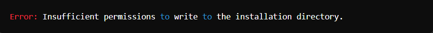

Documentación de errores en la instalación de Moodle en Windows 11
La instalación de Moodle en un entorno Windows 11 puede encontrarse con varias incidencias debido a la configuración del sistema operativo, dependencias de software y configuraciones del servidor web. Documentar estos errores y sus resoluciones permite a los administradores resolver problemas de manera más eficiente en el futuro.
Error 1. Problemas de permisos al instalar Moodle
Durante la instalación de Moodle, el instalador puede encontrar problemas de permisos que impiden la correcta configuración de los archivos necesarios.
Mensaje de error:

Causa: este error ocurre porque el instalador de Moodle no tiene permisos suficientes para escribir en el directorio de instalación especificado.
- Solución:
- Verificar permisos del directorio:
- Navegar al directorio donde se desea instalar Moodle.
- Hacer clic derecho en el directorio y seleccionar "Propiedades".
- Ir a la pestaña "Seguridad" y verificar los permisos.
- Asegurarse de que el usuario actual tenga permisos completos (lectura, escritura y ejecución).
- Ejecutar el instalador como administrador:
- Hacer clic derecho en el instalador de Moodle y seleccionar "Ejecutar como administrador".
Error 2. Falta de dependencias PHP
El instalador de Moodle requiere ciertas extensiones de PHP que pueden no estar instaladas o habilitadas en el entorno de Windows 11.
Mensaje de error:
Causa: las extensiones PHP necesarias para Moodle no están instaladas o habilitadas en la configuración de PHP.
- Solución:
- Instalar extensiones PHP:
- Abrir el archivo php.ini ubicado en el directorio de instalación de PHP.
- Descomentar (eliminar el punto y coma ;) las líneas correspondientes a las extensiones requeridas.
- Guardar los cambios y reiniciar el servidor web (Apache o IIS).
- Verificar la instalación de las extensiones:
- Crear un archivo info.php en el directorio raíz del servidor web con el siguiente contenido.
- Acceder a http://localhost/info.php y verificar que las extensiones requeridas estén habilitadas.
Documentación de errores al configurar la autenticación al correo electrónico del usuario
Configurar Moodle para utilizar la autenticación basada en correo electrónico puede presentar problemas relacionados con la configuración del servidor SMTP, las credenciales y la seguridad.
Error 3. Configuración incorrecta del servidor SMTP
Al intentar configurar la autenticación basada en correo electrónico, Moodle no puede enviar correos electrónicos debido a una configuración incorrecta del servidor SMTP.
Mensaje de error:
Causa: la configuración del servidor SMTP en Moodle es incorrecta, impidiendo que se establezca una conexión con el servidor de correo.
- Solución:
- Acceder a la configuración SMTP en Moodle:
- Navegar a "Administración del sitio" > "Plugins" > "Mensaje de salida" > "Servidor de correo".
- Configurar los parámetros SMTP correctos:
- Servidor SMTP: smtp.example.com
- Puerto SMTP: 587 (para TLS) o 465 (para SSL)
- Nombre de Usuario SMTP: usuario@example.com
- Contraseña SMTP: tu-contraseña
- Tipo de Seguridad SMTP: TLS o SSL
- Guardar y probar la configuración:
- Utilizar la opción "Enviar correo de prueba" para verificar que la configuración es correcta.
Error 4. Usuarios no reciben correos de confirmación
Los usuarios no reciben los correos de confirmación para completar el registro.
Causa: este problema puede deberse a varias causas, como configuraciones de seguridad en el servidor de correo, el correo siendo marcado como spam, o errores en la configuración de Moodle.
- Solución:
- Verificar configuración de correo electrónico:
- Asegurarse de que el servidor SMTP está correctamente configurado (ver Solución del Error 1).
- Revisar el registro de correos de Moodle:
- Navegar a "Administración del sitio" > "Informes" > "Log de correo" para revisar los registros de correos enviados.
- Configuración de SPF y DKIM:
- Asegurarse de que el dominio del correo tiene registros SPF y DKIM configurados correctamente para evitar que los correos sean marcados como spam.
- Probar con diferentes dominios de correo:
- Enviar correos de prueba a diferentes dominios (Gmail, Yahoo, etc.) para verificar si el problema es específico de un proveedor de correo.